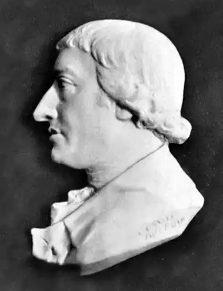

РУДОЛЬФ ЕРІХ РАСПЕ
(1737 — 1794)
Німецький вчений, літератор Распе вивчав у Геттінгені й Лейпцігу природничі дисципліни та філософію. У 1767 році став професором у Каролінумі й доглядачем монетного кабінету, а також бібліотекарем в Касселі. Йому належать деякі праці з літератури, мінералогії, геології, а також рецензії. Завдяки цьому він отримав доступ до Геттінгензького і Лондонського наукового товариств. У 1773 році він здійснив подорож Вестфалією у пошуках старовинних рукописів. А через два роки у подібній же подорожі він скуповував старожитності й монети для ландграфських колекцій. Існує думка, що Распе розтринькав частину монет. За це було видано ордер на його арешт. Але Еріхові Распе вдалося втекти й дістатись Лондона. У 60-ті роки XVIII сторіччя Распе одним з перших звернувся до давнього минулого, створив рицарський роман "Термін і Гунільда", пробудивши інтерес до Біблії як пам'ятки світової літератури. У 1785р. Распе надрукував першого "книжкового" Мюнхаузена. Мюнхаузен — не вигадка. Така людина дійсно жила. Його звали Карл Фрідріх Ієронім барон фон Мюнхаузен-ауф-Боденвердер. Народився він у 1720 році поблизу Ганновера й помер у 1797 році. Належав до багатого шляхетного дворянського роду Німеччини, котрий дав країні чимало відомих державних діячів. Деякі вчені вважають, що Мюнхаузен у молодості був хвацьким офіцером, деякий час був на службі в Росії у роки царювання Анни Іоанівни. За чутками, служив він у Гродненському полку, бував у гостях у маєтках своїх співслужбовців. Брав участь у двох походах проти турок, у звільненні Очакова. Повернувшись додому після мандрів, Мюнхаузен оселився у своєму маєтку, захоплювався полюванням, приймав у себе гостей, любив розповідати їм про свої пригоди в Росії та інших місцях. Як людина життєрадісна, до того ще й мисливець, в оточенні таких же мисливців, та ще й з келихом вина у руці, барон надзвичайно захоплювався, нестримно фантазував. Неправдоподібність його оповідок забавляла слухачів. Деякі історії за посередництвом друзів поширювалися навколишніми маєтками добропорядних німців, обростаючи новими подробицями. Можливо, вже тоді барон зажив слави неабиякого брехуна. Але навряд чи це турбувало його. Кажуть, що він жив легко й безжурно. У 1781 році вийшов гумористичний "Провідник для веселих людей". У цей час Распе опинився у Лондоні. Можливо, він прочитав цей "Провідник", може, сам гостював у домівці Мюнхаузена, але у 1786 році Рудольф Еріх Распе випустив у Англії невелику книгу під назвою "Оповідь барона Мюнхаузена про його чудові мандри". При цьому автор віддав перевагу тому, щоб залишитись анонімом, а невдаху барона представив шановній публіці під справжнім ім'ям. Заслуга письменника полягала в обробці матеріалу з "Провідника" і перетворенні його на цілісний твір, об'єднаний єдиним оповідачем, який, окрім того, мав єдину структуру. В цій книжці на перше місце висунуто ідею покарання брехні, а сама книга побудована як типовий англійський твір, де всі події пов'язані з морем. Англійський варіант пригод Мюнхаузена був зорієнтований на жителів Британських островів і має ряд епізодів, цікавих і найбільш зрозумілих саме англійцям. Распе створив самостійний твір, спираючись у той же час на фольклор, німецьку традицію, а також на ряд творів, починаючи з античних часів і до своїх старших сучасників, до Свіфта з його "Подорожами Гуллівера". Слідом за Распе відомий німецький поет Готфрід Август Бюргер (1747-1794), котрому сподобалась книга Рудольфа Еріха, переосмислив, доповнив і видав її під довгою, за тією модою, назвою "Дивовижні пригоди на воді й на суші барона фон Мюнхаузена". Ця книга витримала декілька видань в Англії, потім у Німеччині, перекладалась іншими європейськими мовами, переказувалась, перевидавалась і стала, нарешті, найпопулярнішою і всесвітньовідомою. Саме Бюргер надав цьому творові широти й перетворив англійський твір на витвір світової літератури. Свої пригоди барон Мюнхаузен розповідає у щирій манері, хоча кожна історія в кінці має мораль, барон пропонує перевірити його хоробру вдачу або відвідати ті місця, де він відзначився, а потім підсумовує свій подвиг і наголошує на тому, що лише він і міг упоратися з цим завданням. Сам тон оповіді бринить тонким гумором, котрий хоч і трохи знижує відвагу героя, але повністю не дискредитує його. Всі пояснення Мюнхаузена дуже чіткі і, на його думку, досить об'єктивні. Хіба ми сумніваємося, що єдиний спосіб врятувати себе з болота — це витягти себе за косу, а ховатися від ведмедів можна лише у ведмежій шкурі, та й що може вирости на голові в оленя, якщо в нього поцілити вишневими кісточками. Пригоди у турецького султана звучать зовсім як казка, де барон залучає собі на допомогу скорохода, силача, того, хто однією ніздрею здіймає бурю, а у мирний час крутить млина, тому й твердимо, що до твору було залучено фольклорні мотиви. В кінці твору Мюнхаузен звертається до своїх нащадків і розповідає, що на одному острові він бачив шибениці з повішеними за п'яти, на запитання місцевих жителів, за що повішені бідолахи, Мюнхаузен зізнається, що ці мандрівники обманювали своїх слухачів неймовірними описами тих місць і подій, де вони буцімто побували. Яка ж реакція нашого героя? Він засуджує таких брехунів, бо сам він, як твердить, завжди дотримувався у розповідях лише фактів. ОСНОВНІ ТВОРИ: "Оповідь барона Мюнхаузена про його чудові мандри". ЛІТЕРАТУРА: 1. Два Мюнхаузена.— Минск, 1993.; 2. Бюрге Г. А., Распе Р. 3. Удивительные путешествия на суше и на море, военные походы и веселые приключения барона фон Мюнхаузена, о которых он обычно рассказывает за бутылкой в кругу своих друзей.— М.,1985.